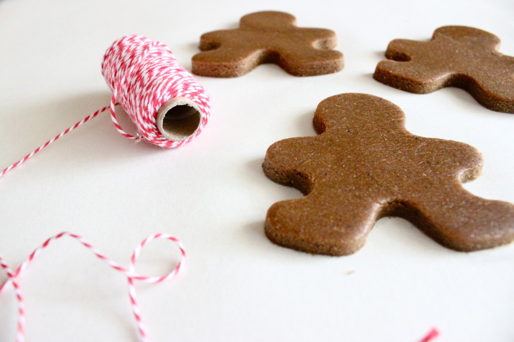

Vegan Gingerbread Cookies

Well, this is embarrassing. I just saw the date stamp on my last post and cringed at the realization that my last post was published two months ago. Truth is, life’s been busy! October and November happened way too quickly and now I can’t believe December is also coming to an end. In the last two months, there’s been a lot of traveling to visit family and friends, adjusting to work life and living in a new state, and the list goes on. While I still haven’t struck the perfect balance between maintaining a full-time job and keeping up with this site, I am trying my best to be more consistent.
That being said, IT’S DECEMBER! Christmas is, without a doubt, my favorite time of the year. Thinking of all festive gatherings and activities, decorative lights and garlands, and bright white snow (now that we live in Colorado) only makes my heart warm. Baking up some delicious Christmas cookies is always an easy and fun way to get into the Christmas spirit. With that, there’s just something about a classic gingerbread cookie that screams Christmas to me. For those of you still looking for Christmas cookie recipe, this one is perfect. I actually made several dozens of these to share with family and friends. You can also get creative with the shape -I made a few Texas longhorn shaped ones (hook ’em horns!) and some Baylor bears for my mother-in-law. Give it a try and be sure to share with me how yours turn out!
Last but not least, I wish you and your loved ones a Merry Christmas. Enjoy!



Ingredients
Cookies
- 1⅓ c whole wheat flour
- ¾ c unbleached all-purpose flour
- ½ tbsp baking powder
- 1 tsp baking soda
- ½ tbsp cinnamon
- 2 tsp ground ginger
- ½ tsp nutmeg
- ½ tsp ground cloves
- ½ cup coconut oil
- ½ cup + 1 tbsp brown sugar
- ¼ cup water
- ½ cup molasses
- ½ tsp vanilla
Icing
- 4 c powdered sugar
- 1 tbsp light Karo syrup
- 3 – 5 tbsp water
- color of choice food coloring
Instructions
Cookies
- In a bowl combine the flour, baking powder, baking soda, cinnamon, ginger, nutmeg and cloves and set - aside.
- In a large bowl, cream together the coconut oil and the sugar with a hand or stand mixer. Beat until the - mixture is nice and light. Add the water, molasses, and vanilla and beat until thoroughly mixed.
- Add the flour mixture gradually to the creamed sugar mixture and beat until well combined.
- Place the dough in a plastic re-sealable bag and refrigerate for about an hour (you can prepare the icing - while you wait).
- Before rolling, let the dough sit at room temperature until it becomes softer and easier to roll.
- Preheat oven to 325 °F.
- Roll the dough directly onto parchment paper. The dough should be approximately ¼” thick. Use cookie - cutters to cut out the dough.
- Bake for about 8-10 minutes, until the cookies are lightly browned around the edges and barely firm in - the center.
- Let them cool completely before decorating.
- Beat all ingredients slowly adding the water in. (7-10 minutes at low speed with a heavy-duty mixer, - 10-12 minutes at high speed with a hand-held mixer).
- For a softer/chewy cookie, store in an airtight container or store in a container with some ventilation - for a crispier cookie.
Icing
- Beat all ingredients for approximately 10 minutes, slowly adding the water in.
- Add food coloring of choice and beat until color is evenly blended.
- Be careful to not add too much water into the icing, your icing should be of a thick consistency.
– Corinna